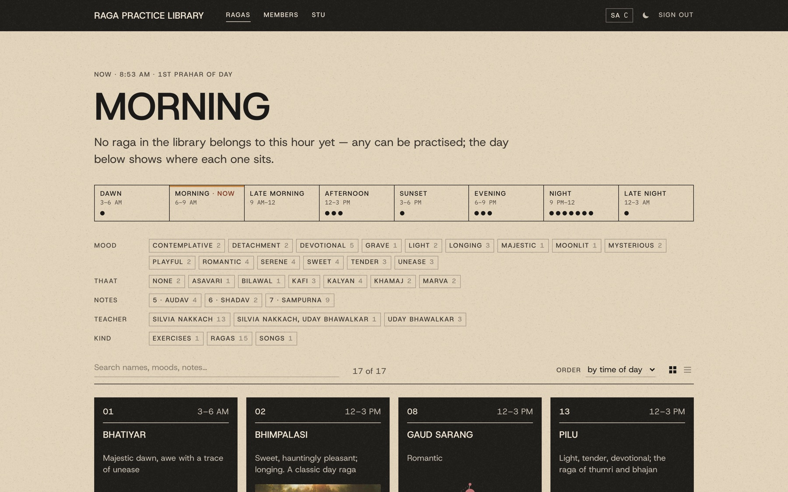
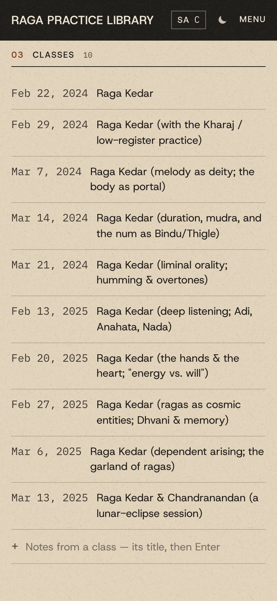
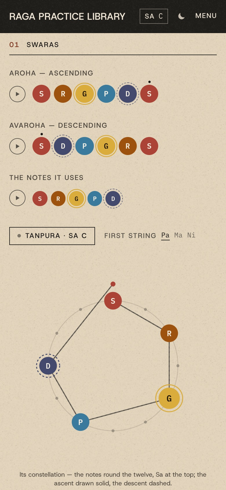
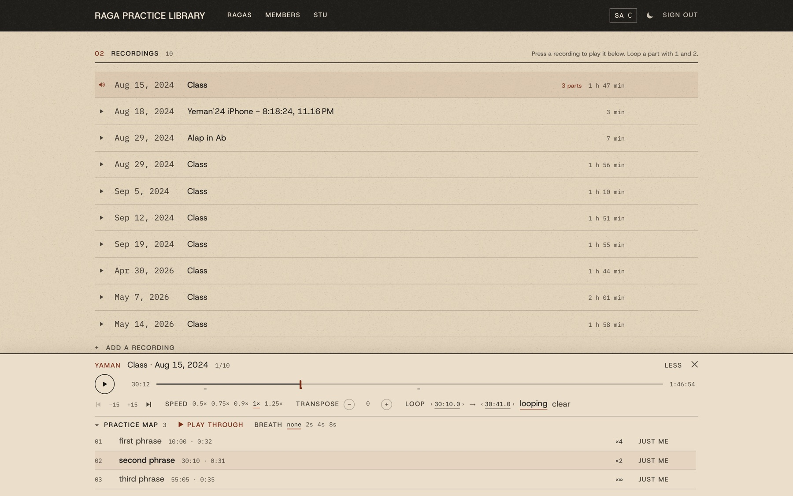
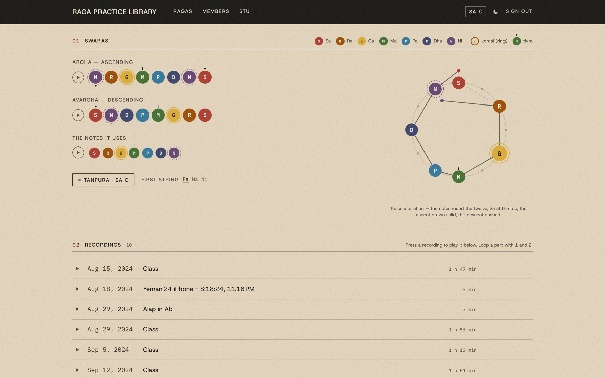

No. 03 Case study · 2026 – present
Raga Practice Library
A private practice room for one raga class — every raga's notes, recordings and imagery in one place, and a player built to loop and sing along.
In short
- The problem
- I study ragas in Silvia Nakkach's Thursday evening class. I had years of recordings and notes, and I never went back to practise with them.
- My role
- Sole designer. I set the brief and made every decision; Claude Code wrote the code from it, in one session.
- The defining decision
- Organise everything by raga, as a living textbook, instead of staying in Drive — and build it fast from parts of my own apps.
- The outcome
- 17 ragas, 69 class notes and 137 hours of recordings in one place. I practise with it; the group hasn't yet, and it isn't online.

Overview
A living textbook for one class
I've studied with Silvia Nakkach for many years — in her Thursday evening raga group, in her Integrative Sound & Music Institute at the New York Open Center, and in a residency with her, Walking Distance. This library is how I get to know those ragas with familiarity. It's also how I'll share them with my classmates.
Each raga has a page: its time of day, mood and scale; its notes as coloured dots you can press to hear; and every recording, class note and composition. A player along the bottom loops a phrase, slows it down, and moves it into your own Sa.
The problem
The recordings existed. I just never went back to them.
I didn't return to the recordings to practise. I couldn't tell which recording held which raga. There was so much information, in so many places, about so many ragas, that getting started felt overwhelming.
The class shared everything over email — notes as Pages documents, recordings as Zoom links. I'd gathered copies into a Drive folder, one folder per raga. It was organised, but it was still folders. The friction was in getting started, not in missing features.
“This year I really want to get to know these ragas, their particular energies, to intuitively know which one is needed in a given moment.”
— my own words, in a note to Silvia
The library's opening screen asks the same question: which ragas belong to this hour.
Constraints
Fast, from a folder I already had, and private
Fast. I wanted it built from the folder I'd already made, not designed from scratch. That forced reuse: the look, the editor, the player and the sign-in all come from my own earlier projects.
Private. The recordings are Silvia's classes, for the people in the group. Nothing shows until you sign in. An admin adds people by email, and each gets a one-time link to choose their own password — nobody sends a password to anybody. The 137 hours stream straight from the original folder, which the app never copies or changes.
Two editors, not one. I'm close to the class's teaching assistant: I take the notes and transcripts and keep the recordings. In my work with Silvia, back-and-forth on the same document has always been key. So she can edit every page, and every save keeps the version before it, with who wrote it.


The insight
Most of it already existed — in the notes and in my own apps
Every raga's notes already opened with the same header: thaat, aroha and avaroha, vadi and samvadi, time of day, mood. So I didn't design a data model from nothing. An importer reads that header into each raga's facts, and each class into its own dated page. Even the time, written as “Evening, 6–9 PM,” becomes an hour the library can sort by.
The parts came from my own work. Becoming's library player was already written for raga classes. Archive gave it loops. Fretboard Constellations gave seven colours, one per scale degree — here, Sa Re Ga Ma Pa Dha Ni. And this portfolio gave the paper, the type and the cards. Reuse is why it could be built in an afternoon.

The decision
A custom living textbook, not better folders
Staying in Drive was a real option. But I'm a very visual person, and I wanted a custom, integrated living textbook of this music.
So the library opens on the hour, and the day is drawn as eight prahars — which is also the filter, beside mood, thaat, number of notes and your own tags. Every swara is a dot in its own colour: komal drawn as a ring, tivra Ma and the octaves marked the way Bhatkhande notation marks them. Each raga also has a constellation — its notes round the twelve, its ascent drawn between them. A straight raga draws a calm shape; a zig-zag one crosses itself.

What I gave up: Drive's free storage, and a place the group already knew. Hosting the large audio is now my problem to solve — and Drive's own player can't loop or transpose inside the app.
What didn't work
Opening a page rewrote it
While testing, I opened an imported class note and closed it without typing. It
saved anyway — with a backslash before every square bracket. The cause was in the
editor code I'd reused from Becoming. It compared two documents in a way that is
never true between the editor and the importer, so any page with a [,
* or _ looked changed. The fix was one small function.
Becoming still has the original code.
Two smaller rough edges came from the import. Only two of Uday Bhawalkar's six masterclass handouts got a date, because only two say “Date:”. And Raga Bhatiyar's notes mention reference recordings its folder doesn't have.
Outcome
Built, filled, and in my own practice — not yet shared
The library holds 17 ragas, 112 pages — 69 of them class notes — and 75 recordings: 137 hours from 2021 to 2026, including all six sessions of Uday Bhawalkar's June 2026 masterclass.
I'm using it, and I recognise the ragas better — and which to practise at what time of day. Silvia has seen screenshots and seems excited; we haven't used it together yet. It isn't online, and no one else has an account. What it changes for the group isn't known yet.
Reflection
The hard parts are still ahead
I can't judge it fully until it launches, at the end of October. Two design decisions are still open, and they're the real ones: where the large audio files live, and how a teacher and a student work on the same notes. The pieces are built — roles, invitations, shared loops and a history on every page — but they haven't been tested with Silvia.
It fits the thread of my work: a tool for someone in the middle of something, built to get out of the way. Here, that's a student singing along with a class. The player keeps going while you read the notes, and every control has a key. One caveat: it's built for practice at home, not for the class itself.